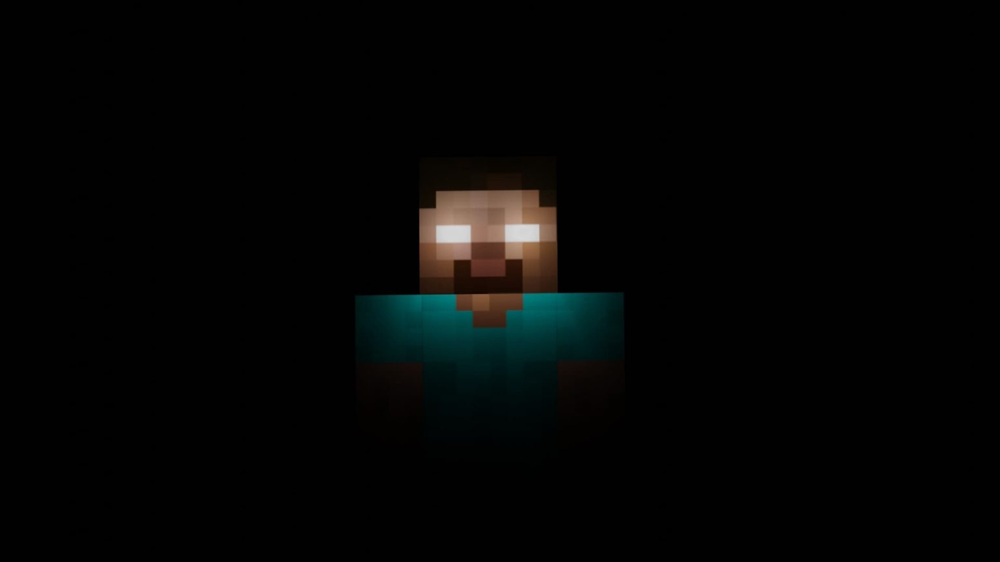

Bienvenue sur la dernière théorie
La théorie"Le Joueur : le grand méchant du jeu"
Les Cité des Abîmes infecteraient le Monde Normal
Herobrine est sans doute la légende urbaine la plus obscure de Minecraft. Né d’une Creepypasta en 2010, Herobrine a rapidement dépassé le stade de simple mythe, inspirant de nombreux YouTubers et streamers à simuler des apparitions pour convaincre leur public de son existence. Parmi les nombreuses théories, l’une prétend qu’Herobrine serait le frère décédé du créateur de Minecraft, Notch, bien que ce dernier n’ait pas de frère disparu, invalidant ainsi cette théorie.
La théorie la plus populaire repose sur le fait qu’Hérobrine serait un "esprit" ou une entité issue d’une ancienne version du jeu, et que sa présence pourrait être liée à des événements étranges ou des bugs, comme des phénomènes inexpliqués dans les mondes générés. Certains joueurs affirment l’avoir vu dans le jeu, tandis que d’autres assurent avoir trouvé des indices dans les fichiers du jeu.
Cependant, la communauté Minecraft et les développeurs de Mojang ont toujours nié l’existence d'Hérobrine. Ils ont souvent expliqué que les histoires à son sujet étaient des canulars créés par les joueurs eux-mêmes, alimentés par des mods ou des fausses rumeurs.